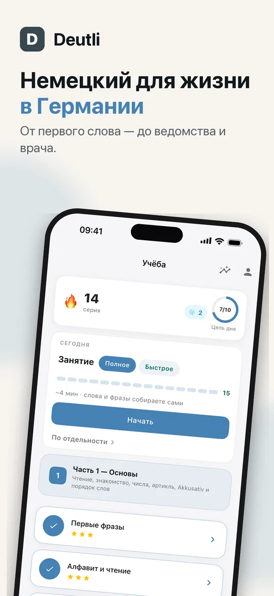
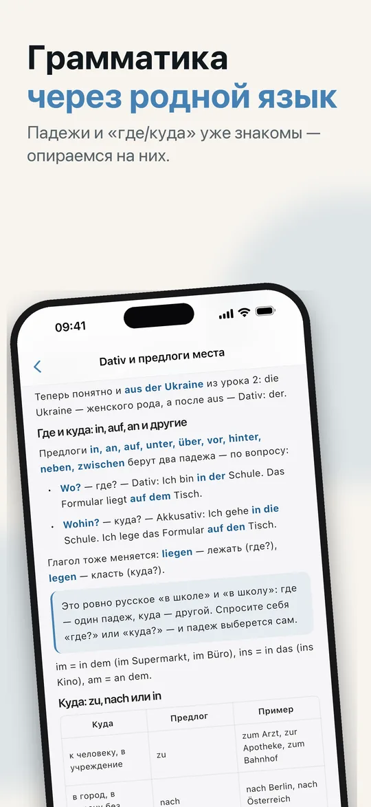
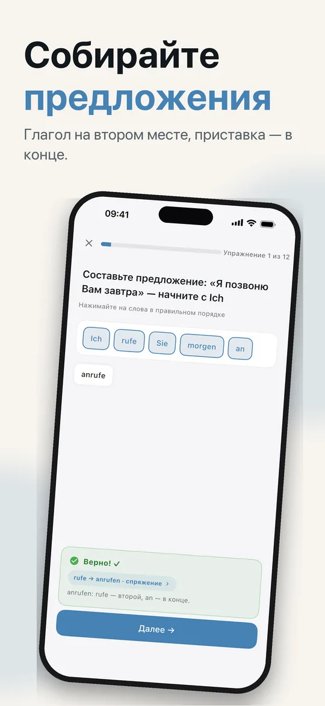
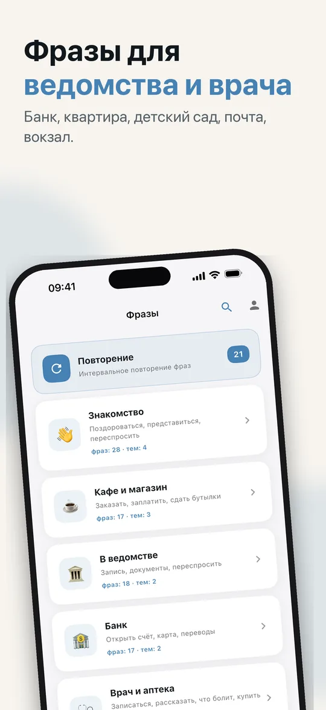
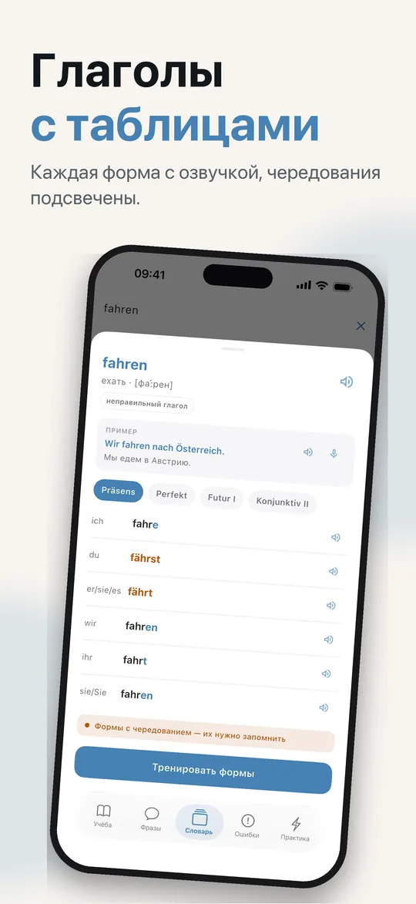
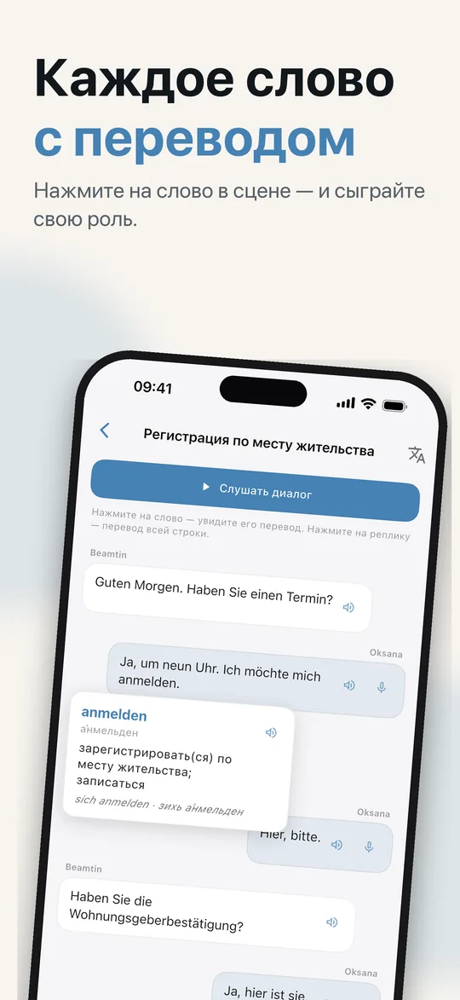
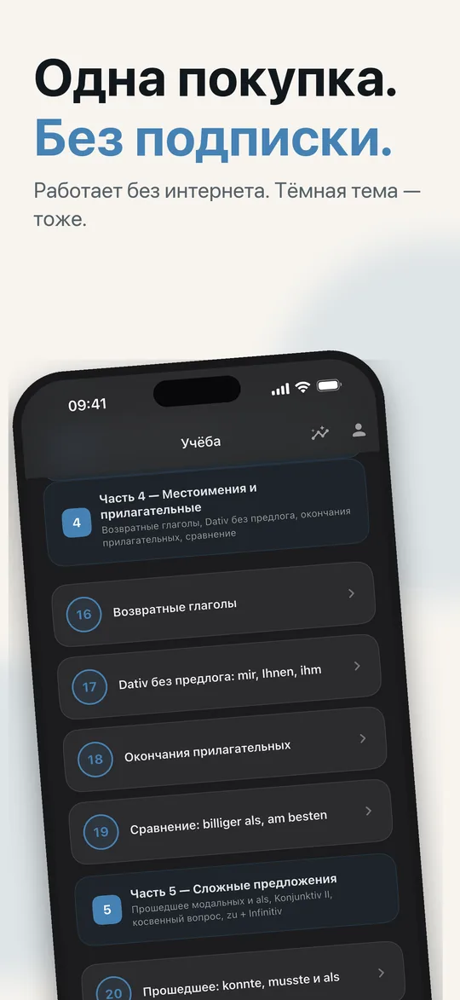

Грамматика с объяснениями по-русски, фразы для Bürgeramt, банка и врача и диалоги, которые вы проговариваете сами. Для тех, кто переехал в Германию, Австрию или Швейцарию и начинает учить немецкий.
Начать можно бесплатно · iPhone и iPad
От алфавита до Konjunktiv II — уровни A1 и A2.
Пробный урок и 23 урока — от алфавита, артиклей и чисел до Perfekt, Konjunktiv II и косвенных вопросов.
466 упражнений — выбор ответа, порядок слов, пропуски и пары — и 23 набора практики с 266 предложениями, чтобы вернуться к пройденному.
180 фраз в 10 ситуациях: Bürgeramt, банк, врач, квартира, телефон и интернет, детский сад и школа, почта, транспорт, кафе и знакомство. Тренируйтесь карточками или тестом.
10 сцен — регистрация адреса, просмотр квартиры, запись к врачу, первый день в детском саду. Собеседник говорит, а свою половину вы говорите сами: плитками, с клавиатуры или вслух.
605 слов — каждое существительное с артиклем и множественным числом, у каждого слова пример-предложение с озвучкой — и 120 глаголов с таблицами, от Präsens до Konjunktiv II.
35 пар на то, что чаще всего пропускает ухо, привыкшее к русскому или украинскому: долгие и краткие гласные, u и ü, o и ö, -e и -er, dem и den.
Русский, украинский или английский. В русском и украинском интерфейсе у слов и фраз есть транскрипция кириллицей с ударением и долготой: гу́:тен та:к.
Нажмите на лампочку во время любого упражнения — правило перед глазами, а место в упражнении не теряется.
Начали урок на iPhone — продолжайте с того же места на iPad. Синхронизация идёт через ваш iCloud — без аккаунта и без нашего сервера. Часть Deutli Pro.
Без аккаунта, без регистрации, без рекламы и без слежки в других приложениях. Уроки и прогресс хранятся на вашем устройстве. Приложение отправляет анонимную статистику использования и отчёты о сбоях — никогда не то, что вы пишете или говорите, и ничего, что указывает на вас, — с обработкой в Европейском союзе. Как это устроено
Семь экранов из приложения — листайте.







Русский, украинский или английский — при первом запуске. Поменять можно в любой момент в профиле.
Уроки по порядку, в каждом теория и упражнения — от алфавита до Konjunktiv II.
Фразы, диалоги и словарь для мест, куда вы ходите каждую неделю: Bürgeramt, врач, банк.
Пробный урок и уроки 1–6 — бесплатно. Аккаунт не нужен.
Скоро в App Store